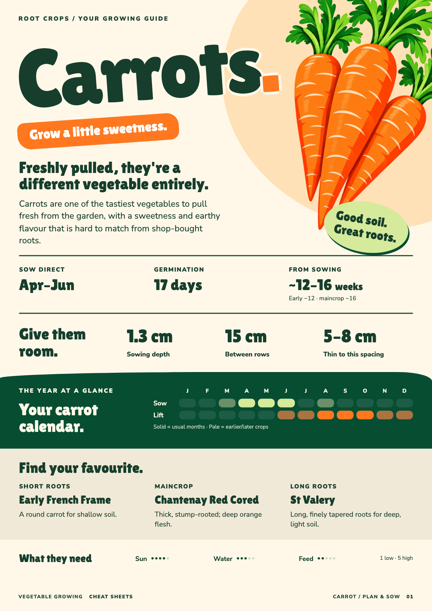
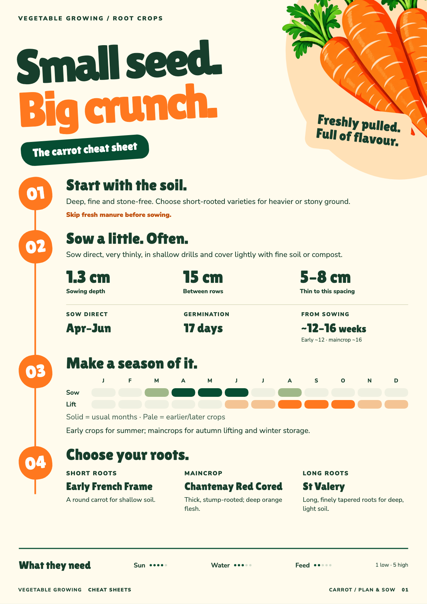
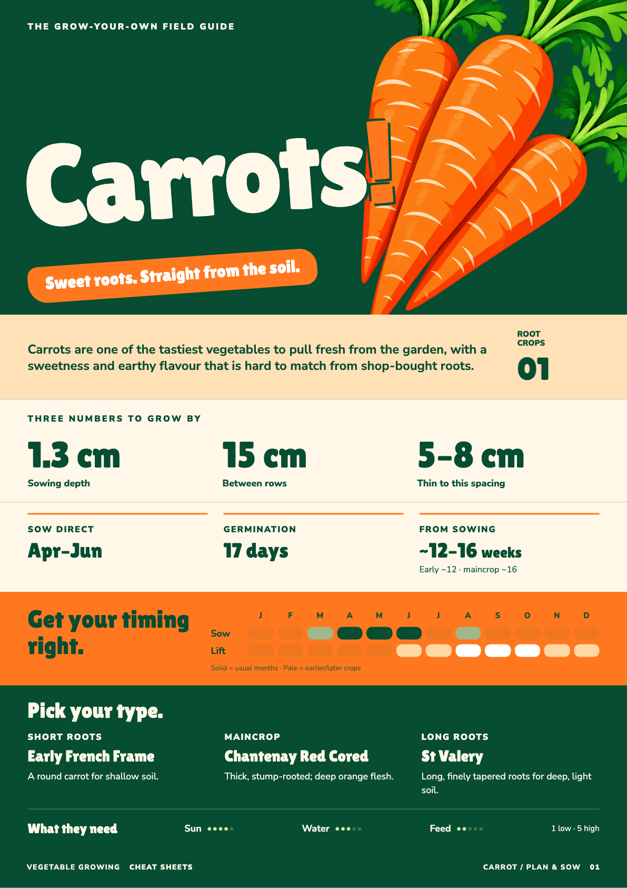

A · The big harvest
The closest relative to the cover: oversized type and carrots, soft colour fields and open, readable facts.


Decision: Richer A v1 is approved. Open the approved full-information revision. These earlier studies are retained for comparison.
Three new compositions, each with a planning page and a practical care page. Chunky type, generous illustration, bright orange and deep green run through the entire design. Carrot is the common test crop.
The closest relative to the cover: oversized type and carrots, soft colour fields and open, readable facts.

A clear, numbered journey through the crop. More of the personality comes from how the information flows.

The most graphic option: a deep-green opening, huge crop name and orange bands carrying the key facts.
